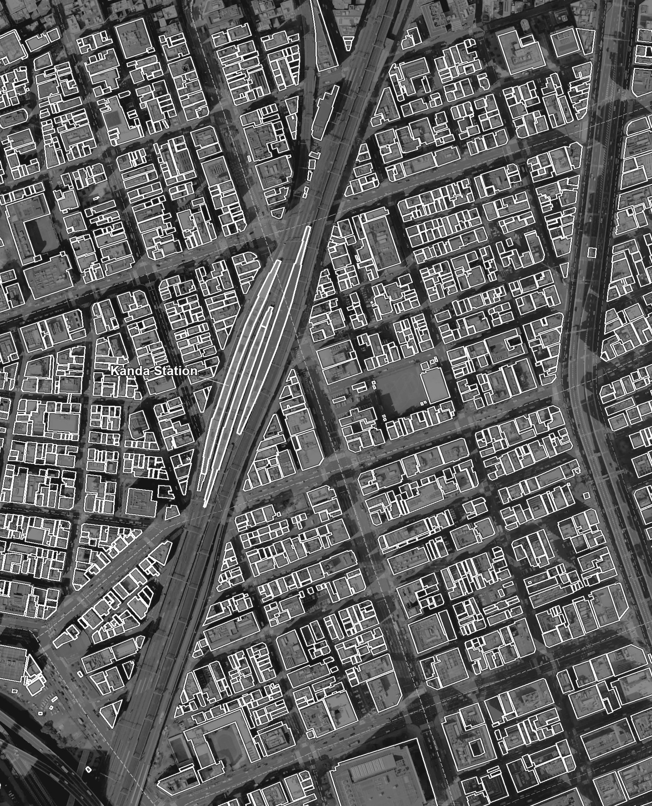

Kajicho Site Atlas
Website Design Guide
Warm paper, charcoal text and terracotta links carry the interim slides’ palette into the atlas. Maps, text and navigation use the same outer grid.

Color
Use terracotta for links, selections, and focus. Use warm paper for pages and pale gray for grouped information. Map colors follow their own legends. Interim slide 5 · Interim cover
- Terracotta
- #8B3A2B Links and emphasis
- Deep red
- #713023 Hover
- Red tint
- #F4EAE5 Selected controls
- Warm paper
- #FBF9F6 Page and header
- Pale gray
- #F3F0ED Grouped information
- Charcoal
- #1C1917 Headings and text
- Warm gray
- #645D56 Captions and sources
- Border gray
- #E4DFD7 Dividers and borders
Typography
IBM Plex Sans sets the English type. Noto Sans SC and JP cover Chinese and Japanese characters. Set headings at weight 600 and body text at 400. Use monospace for metrics, years and source labels.
Grid and spacing
Align text, figures, and navigation to the same outer margins. Keep long paragraphs within about 65 characters per line.
Outer margins · 20–80 px
Column gaps · 16–32 px
Links and sections
Use text labels for actions, a red underline for the current page, and a visible focus outline. On the home page, put the full aerial beside the introduction. Use a wide crop in Future Vision. Keep the outcomes visible together and place maps alongside case comparisons. Put calculation details in notes that expand in place.
Navigation and actions
Use a text link to follow a reference. Use a filled button for a primary action.
Read the case comparisonsAn open conflict case
Planting and deliveries on the same street
- Keep the loading space available.
- Test rain gardens in the remaining curb space.
- Compare runoff and loading access before and after.